Events and
Festivals
Join the vibrant celebrations and cultural events of Pampanga
Events and
Festivals
Join the vibrant celebrations and cultural events of Pampanga

A major street party festival where the city center becomes filled with live bands, dancing crowds, and food stalls. It highlights Angeles City’s strong music culture and vibrant nightlife atmosphere.

A Catholic religious celebration honoring Our Lady of La Naval through solemn masses and processions, reflecting deep devotion among residents.

A large aviation event held near Clark showcasing colorful hot air balloons, aerial displays, and recreational activities attracting local and foreign visitors.

A Christmas lantern parade that showcases giant lanterns, music, and Kapampangan holiday traditions celebrated across the city streets.

A grand river procession honoring St. Peter (Apung Iru), where decorated boats carry the saint along Pampanga River accompanied by devotees and prayers.

The main town fiesta of Arayat honoring Our Lady of Lourdes, celebrated with religious masses, processions, street decorations, and community gatherings. It is the most important annual celebration in the municipality.

Religious and devotional events held at Mount Arayat, where devotees climb or visit sacred areas for prayers, reflection, and thanksgiving, especially during Holy Week and special feast days.
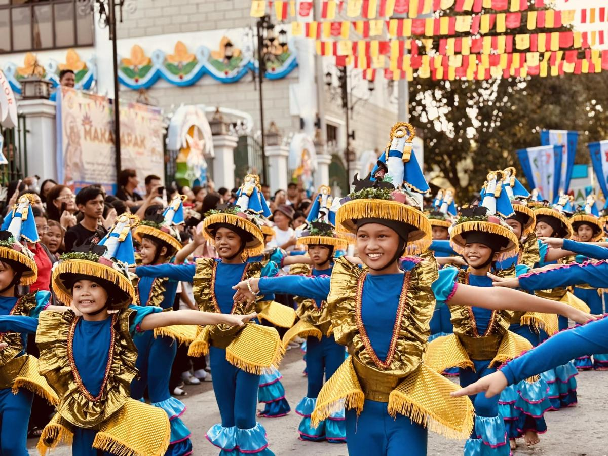
A religious procession honoring Our Lady of the Holy Rosary, featuring prayers, marching devotees, and church-based celebrations.
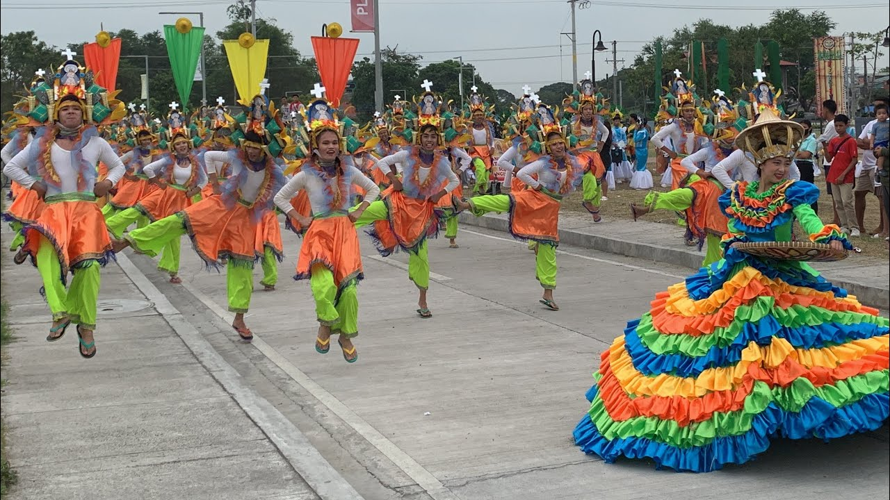
A cultural reenactment that symbolizes the resilience of Bacolor residents who walked barefoot during the Mount Pinatubo eruption aftermath.

A unique festival celebrating Candaba’s duck farming industry, showcasing dishes made from eggs and highlighting the wetland ecosystem.

A traditional Catholic devotion held every May where flowers are offered to the Virgin Mary through prayers and processions.

A tribute to the carabao, an important farming animal, featuring parades and agricultural showcases.
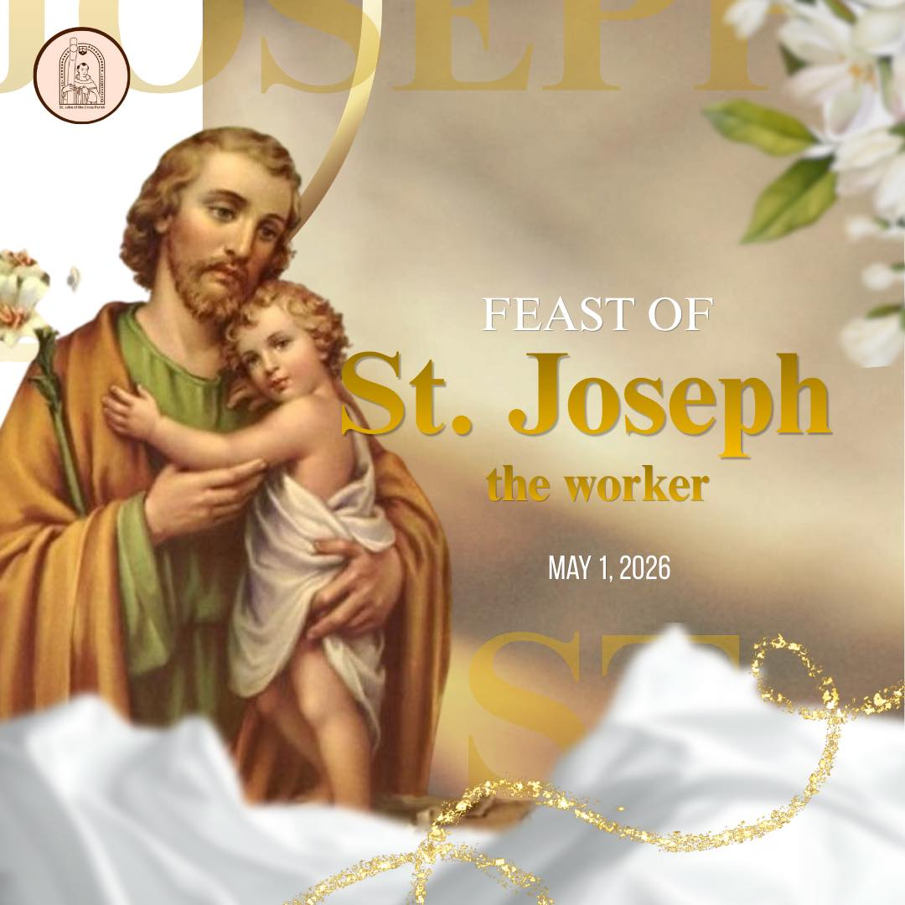
A religious celebration honoring St. Joseph as the patron of workers, featuring masses and community activities.
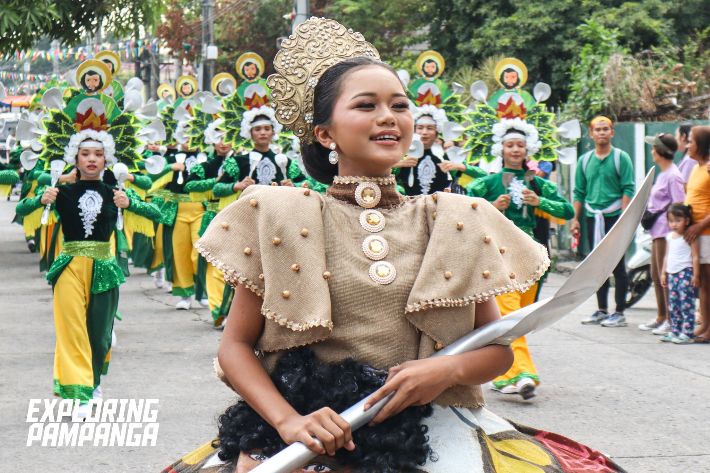
A cultural festival showcasing Floridablanca’s identity through performances, parades, and traditional displays.

A celebration of Betis woodcarving artistry, showcasing detailed religious and cultural carvings made by local craftsmen.

A religious procession featuring various saint statues carried through the streets with prayers and music.

A Catholic celebration honoring the Virgin Mary through church masses and processions.

A cultural celebration honoring the national flower and Lubao’s identity, featuring parades and performances.

A large event combining hot air balloon displays, concerts, and tourism activities.

A religious celebration honoring the town’s patron saint through masses, processions, and community gatherings.

A cultural showcase of religious woodcarving traditions known as “santos” or saint figures.

Celebrated every February, the Balacat Festival is Mabalacat City’s main event. It features street dancing, parades, and cultural shows that highlight the city’s history, unity, and the importance of the balacat tree as its symbol.

Held in February, this festival honors Chieftain Caragan and the city’s Aeta roots. It includes cultural dances and performances that showcase the traditions and heritage of Mabalacat’s early settlers.
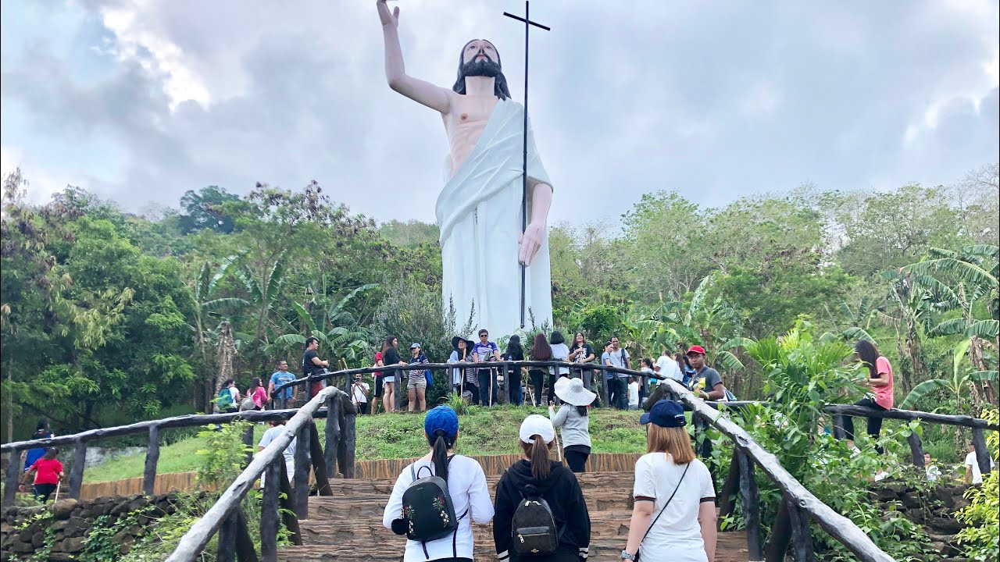
A religious devotion linked to Mount Arayat, reflecting faith and local spiritual traditions.
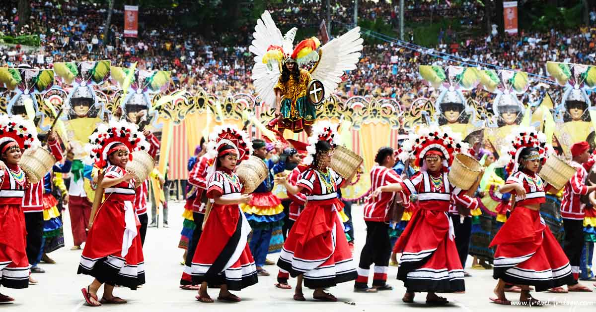
A religious celebration honoring St. Michael the Archangel with church activities and processions.

A celebration of the town’s fishing industry featuring seafood dishes and culinary showcases.
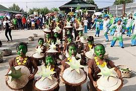
A cultural festival highlighting Masantol’s identity and river-based traditions.

A celebration of Mexico’s strong corn industry featuring agricultural exhibits, street dances, and local food products made from corn.

A cultural and religious festival honoring St. Nicholas through colorful parades, performances, and community activities.

A famous New Year celebration where men dress as women in colorful costumes to welcome prosperity and good fortune.
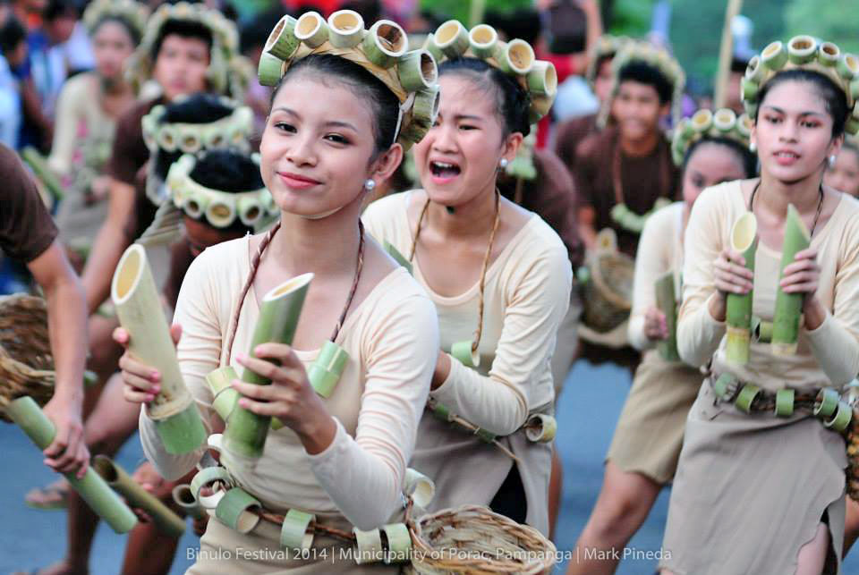
A food festival highlighting the traditional way of cooking rice and dishes inside bamboo tubes.

Pampanga’s most famous festival featuring giant lanterns with synchronized lights and intricate designs competing every Christmas season.
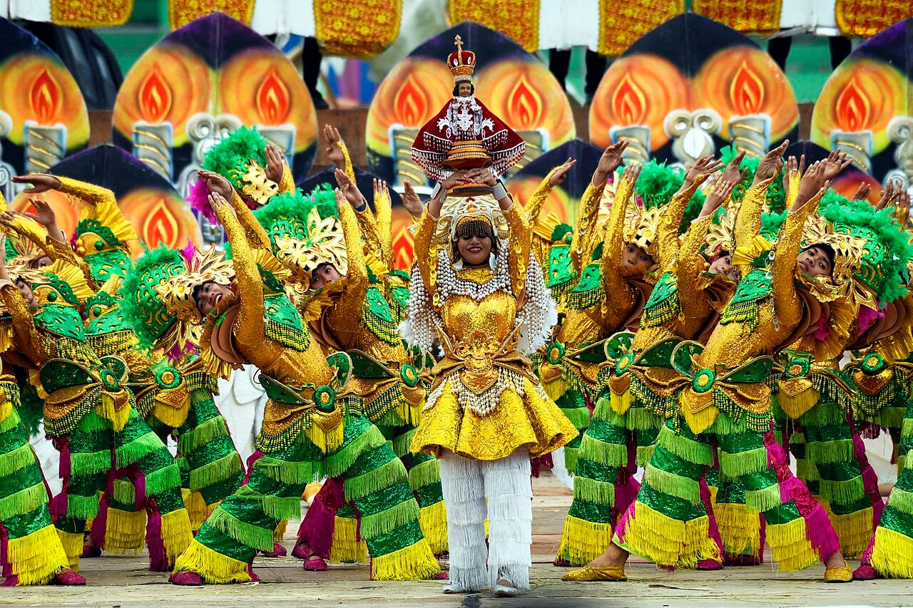
A cultural festival promoting unity, heritage, and the hardworking spirit of San Simon residents.
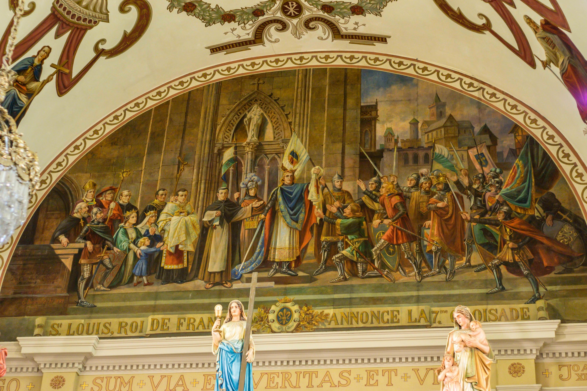
Held every August 25, this is the official town fiesta of San Luis. It honors the patron saint, St. Louis King of France, through a religious celebration that includes a solemn mass, fluvial or street procession, and community-wide activities. Aside from the religious part, there are also cultural programs, band performances, and barangay presentations, making it both a spiritual and social gathering for the whole town.
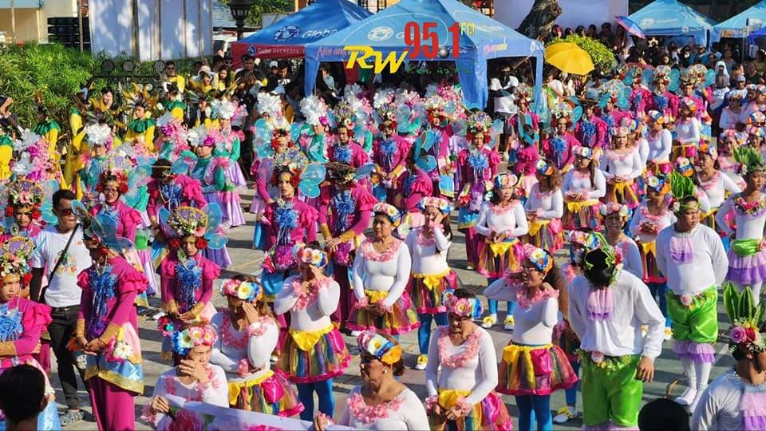
The Sabuaga Festival is a cultural-religious event in San Luis celebrated every Easter Sunday (around April). It features a procession where flower petals are showered (“sabuaga”) on the image of the Virgin Mary as she passes through the streets. The event symbolizes joy and thanksgiving for Christ’s resurrection. It also includes street dancing and community participation, showcasing the town’s devotion and Kapampangan traditions.

A colorful street dancing festival featuring vibrant costumes, music, and energetic cultural performances.

A food festival celebrating “duman,” a traditional Kapampangan delicacy made from young green rice grains.

A cultural celebration showcasing Santa Rita’s traditions, performances, and local community pride.

The municipality’s main religious celebration honoring St. Thomas the Apostle through masses and processions.

A devotional dancing festival honoring Saint Lucy where devotees dance while praying for healing and blessings.

A religious celebration dedicated to the municipality’s patron saint through masses and processions.